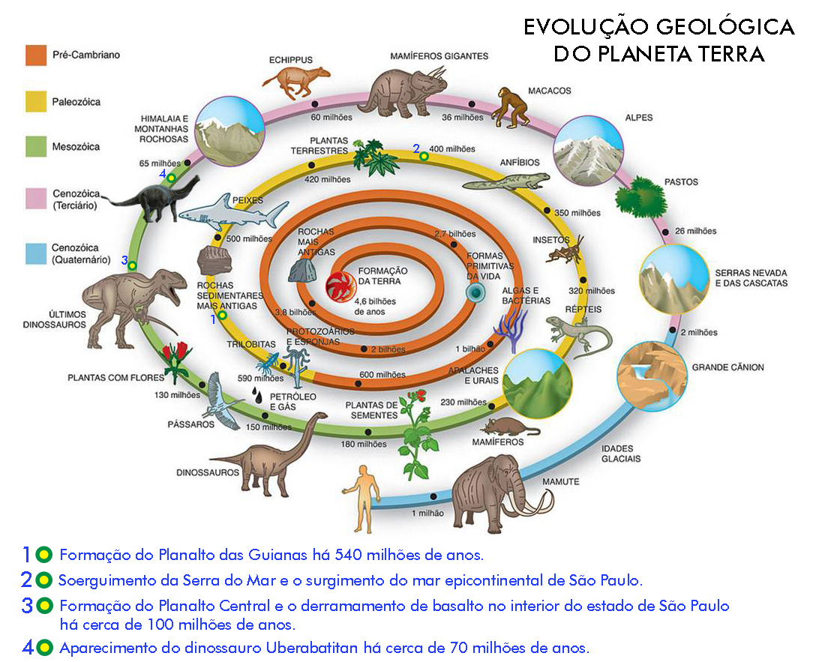
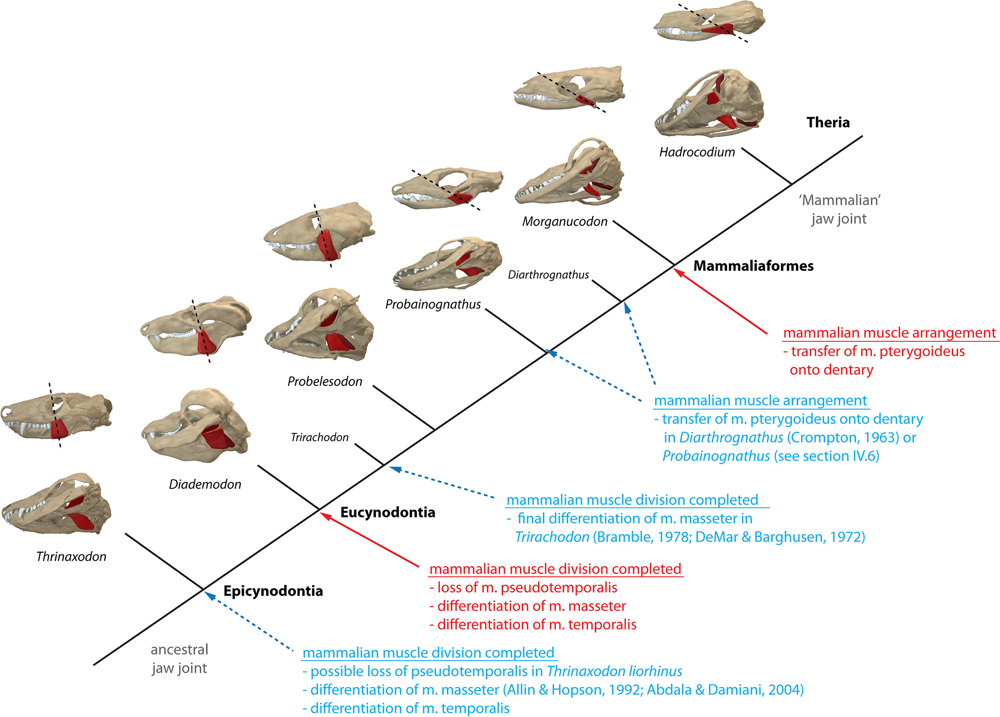

♿ Acessível - Leitores de tela, alto contraste, navegação por teclado
Origem dos Mamíferos em Sinápsidos
Cynodontia → Mammaliaformes
A história da vida na Terra é marcada por grandes divergências evolutivas, momentos em que linhagens se separam para seguir caminhos radicalmente distintos. Uma das mais profundas dessas separações ocorreu no final do Período Carbonífero, há aproximadamente 312 a 318 milhões de anos, quando os amniotas — vertebrados que desenvolveram o ovo com âmnio, libertando-se da dependência da água para a reprodução — se dividiram em dois clados monumentais: os Sauropsida, que dariam origem aos répteis e às aves, e os Synapsida, a linhagem que, após uma longa e complexa jornada evolutiva, culminaria no surgimento dos mamíferos.
A origem dos Mammalia, portanto, não pode ser entendida como um evento singular, mas sim como o resultado de uma saga evolutiva que se estendeu por mais de 100 milhões de anos, atravessando as eras Paleozoica e Mesozoica.

Use o menu acima para navegar entre os temas.
Resumo dos Objetivos e Conteúdos
- Compreender marcos da transição crânio-mandibular
- Relacionar Cynodontia e Mammaliaformes
- Explorar um cladograma interativo com evidências
Conteúdos em foco
- Arquitetura craniana: fenestra temporal e musculatura adutora
- Evolução em mosaico: aquisição gradual de caracteres
- Irradiações adaptativas: Pelycosauria → Therapsida → Cynodontia → Mammaliaformes
- Transições-chave: palato secundário, heterodontia, postura ereta, articulação dentário–esquamosal
- Gargalo noturno: implicações ecológicas na origem dos mamíferos
Arquitetura Craniana: Fenestra Temporal
A classificação dos amniotas historicamente se apoia no padrão de fenestras na região temporal do crânio.
- Anápsidos: sem fenestras temporais
- Diápsidos: duas fenestras (saurópsidos)
- Sinápsidos: uma fenestra temporal inferior
Nos sinápsidos, a fenestra ampliou origem/área para músculos adutores da mandíbula, chave para a mastigação.
Transições Anatômicas: Resumo
- Palato secundário: ausente → incipiente → completo
- Dentição: homodonte → heterodonte simples → heterodonte complexa
- Mandíbula: articular–quadrado → dupla → dentário–esquamosal
- Postura: esparramada → semi-ereta → ereta
- Metabolismo (inferido): ectotermia → endotermia incipiente → endotermia
- Fenestra temporal: pequena → ampliada → confluente com a órbita
Evidência de evolução em mosaico: caracteres surgem em momentos diferentes.
Tabela comparativa (mini)
Pelycosauria
🕳️ fenestra pequena
palato ✖
mandíbula AQ
🦷 homodonte
🐊 esparramada
❄️ ectotermia
Therapsida basal
🕳️ fenestra ↑
palato ◐
mandíbula mista
🦷 heterodonte simples
🐾 semi-ereta
♨️ endotermia incipiente
Cynodontia avançados
🕳️ ampla
palato ✔
mandíbula dupla → D–E
🦷 heterodonte complexa
🐾 ereta
🔥 endotermia
Mammaliaformes
🕳️ confluente
palato ✔
mandíbula D–E
🦷 tribosfênica/complexa
🐾 ereta
🔥 endotermia
Ícones: 🕳️ fenestra; 🦷 dentição; 🐾 postura; ♨️/🔥 metabolismo. Cores: cinza = ancestral; âmbar = intermediário; verde = derivado.
Mastigação e Exaptação do Ouvido Médio
A heterodontia e o palato secundário permitiram processamento oral eficiente do alimento.
O aperfeiçoamento da mastigação remodelou o crânio e teve efeito colateral profundo:
Ossos articular e quadrado foram miniaturizados e incorporados ao ouvido médio (martelo e bigorna) — um caso clássico de exaptação.

Transformações morfológicas na musculatura e esqueleto durante a evolução dos sinápsidos.
Fonte: Romer & Parsons (2016) - Biological Reviews. doi:10.1111/brv.12314
Essas mudanças músculo-esqueléticas foram fundamentais para o sucesso evolutivo dos mamíferos, permitindo maior eficiência locomotora, adaptação a diferentes ambientes e o surgimento de características únicas do grupo.
Irradiação dos Sinápsidos
O gráfico ilustra a diversificação dos sinápsidos ao longo do tempo geológico, mostrando os principais grupos que surgiram e se extinguiram desde o Carbonífero até o presente. Destaca a ascensão dos mamíferos a partir de linhagens cinodontes, após grandes extinções e irradiações evolutivas.
Glossário
- Sinápsidos (Synapsida)
- Clado de amniotas com uma única fenestra temporal; inclui mamíferos e seus ancestrais fósseis. ver slide
- Saurópsidos (Sauropsida)
- Clado-irmão dos sinápsidos: répteis e aves. ver slide
- Fenestra temporal
- Abertura no crânio atrás da órbita que expande área para inserção de musculatura mandibular. ver slide
- Heterodontia
- Dentição diferenciada (incisivos, caninos, pré-molares, molares) com funções distintas. ver slide
- Palato secundário
- Separação entre cavidades oral e nasal, permitindo mastigação e respiração simultâneas. ver slide
- Articular–quadrado
- Articulação mandibular ancestral dos amniotas (osso articular da mandíbula com quadrado do crânio). ver slide
- Dentário–esquamosal
- Articulação mandibular típica de mamíferos (osso dentário com esquamosal). ver slide
- Exaptação
- Cooptação de uma estrutura para nova função (ex.: articular/quadrado → martelo/bigorna). ver slide
- Endotermia / Ectotermia
- Produção interna de calor vs. dependência do ambiente para a regulação térmica. ver slide
- Cynodontia (Cinodontes)
- Subgrupo de terapsídeos com traços pré-mamalianos marcantes (palato, heterodontia, dentário expandido). ver slide
- Mammaliaformes
- Grupo próximo à base de Mammalia, com muitas características de mamíferos. ver slide
- Tribosfênico
- Padrão de molar mamaliano com cúspides que permitem trituração e cisalhamento eficientes. ver slide
- Postura esparramada/ereta
- Ângulo dos membros em relação ao tronco; esparramada (lateral) vs. ereta (sob o corpo). ver slide
- Anápsidos / Diápsidos
- Amniotas sem fenestras temporais (anápsidos) vs. com duas fenestras (diápsidos). ver slide
- Sinapomorfia
- Caráter derivado compartilhado que define e sustenta um clado. ver slide
- Irradiação adaptativa
- Rápida diversificação de um grupo em múltiplos nichos ecológicos. ver slide
- “Gargalo noturno”
- Hipótese de que ancestrais mamalianos tiveram hábitos noturnos, influenciando adaptações sensoriais e fisiológicas. ver slide
- Metatarsos digitígrados
- Padrão de apoio nos dedos (digitígrado), associado a locomoção mais eficiente. ver slide
- Narinas secundárias
- Aberturas internas (coanas) recuadas pelo palato secundário, separando fluxo aéreo da cavidade oral. ver slide
- Diafragma
- Músculo respiratório que separa tórax e abdômen; indícios em cinodontes sugerem ventilação eficiente. ver slide
Termos usados ao longo dos slides para facilitar a revisão durante a apresentação.
Leitura de Apoio (PDF)
Documento: "Origem dos Mamíferos em Sinápsidos"
Se o PDF não carregar, abra em nova guia.
Distribuição Geográfica dos Fósseis
O mapa mostra os principais locais de descoberta de fósseis de sinápsidos ao redor do mundo, evidenciando a ampla distribuição do grupo e sua importância para o estudo da evolução dos mamíferos.
Créditos e Referências
- Referência principal: Romer, A.S. & Parsons, T.S. (2016). The Vertebrate Body. Biological Reviews. doi:10.1111/brv.12314
- Imagens e textos: Projeto cladograma_interativo desenvolvido por Ronan Armando Caetano
- Slides construídos com: Reveal.js
- Softwares e bibliotecas utilizados:
- Reveal.js (apresentação de slides)
- D3.js (cladograma interativo)
- ColorBrewer2 (paleta de cores BuGn)
- HTML5, CSS3, JavaScript
- VS Code
- GitHub Pages
- Acessibilidade implementada:
- Leitores de tela: ARIA labels, roles e navegação por teclado completa
- Modo alto contraste: Fundo preto + texto branco (WCAG AAA)
- Skip link: Acesso direto ao conteúdo principal
- Navegação acessível: Menu de abas com suporte a Tab, Enter e setas
- Player de música acessível: Controles nativos com labels descritivos
- Zoom nativo: Suporte completo do navegador
- Autor: Ronan Armando Caetano
- Assistente de IA: GitHub Copilot (desenvolvimento do código e implementação das funcionalidades de acessibilidade)
Todos os direitos reservados ao autor. Projeto didático para fins educacionais.